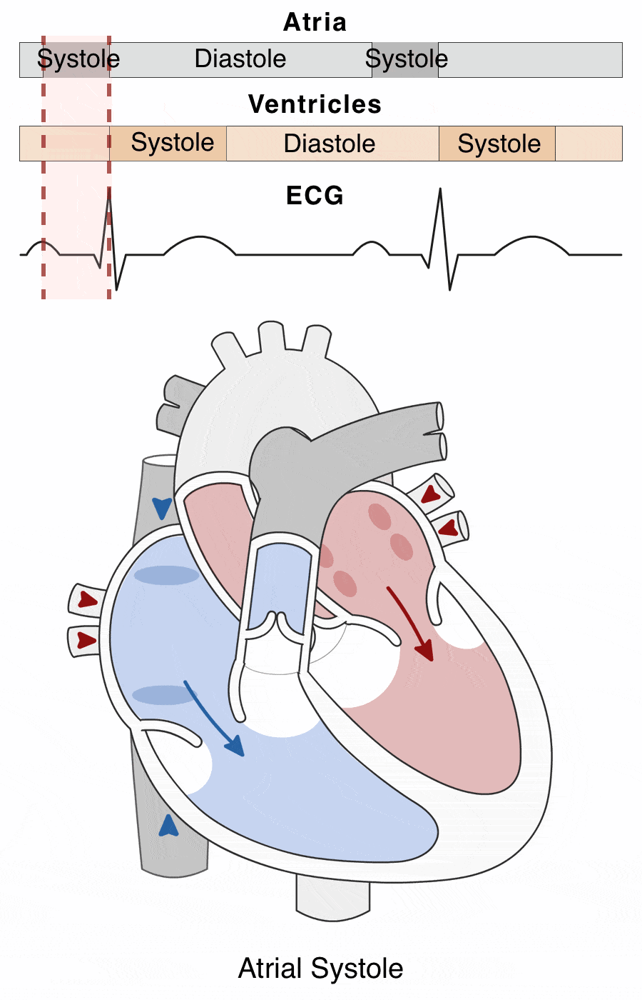
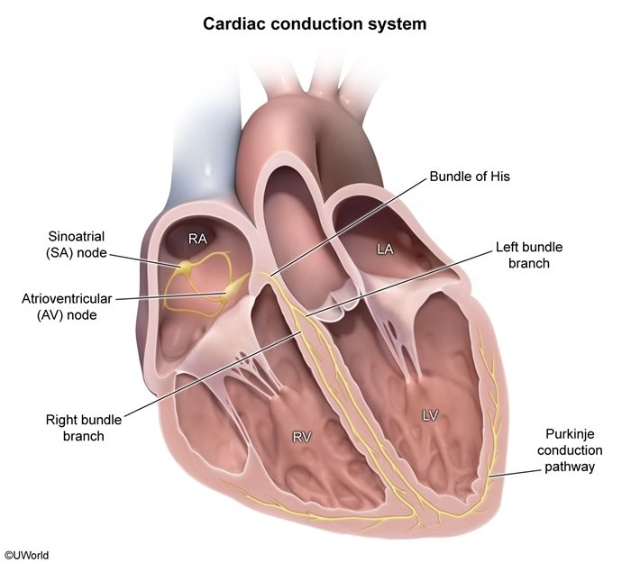
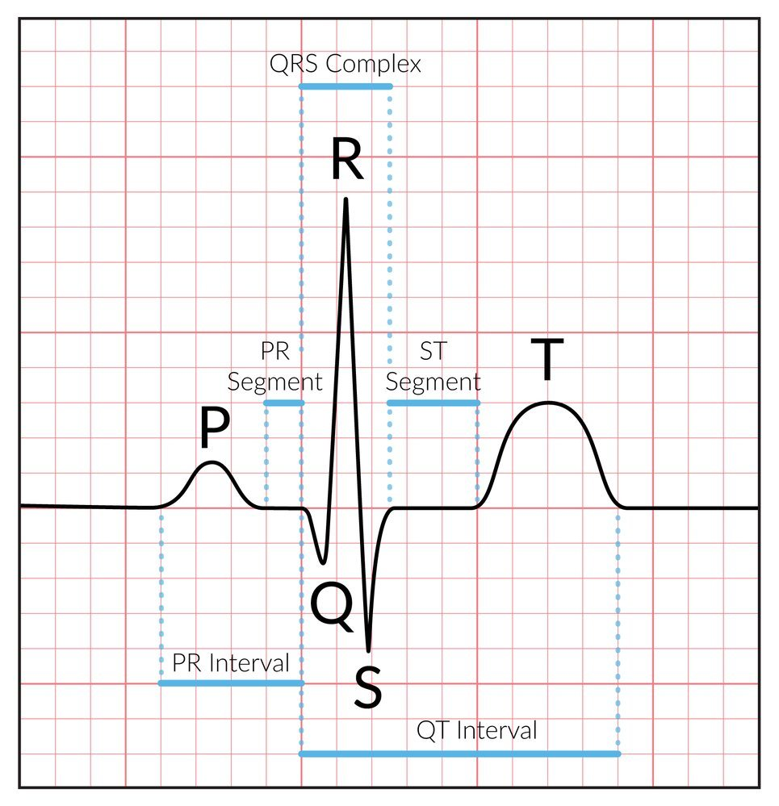
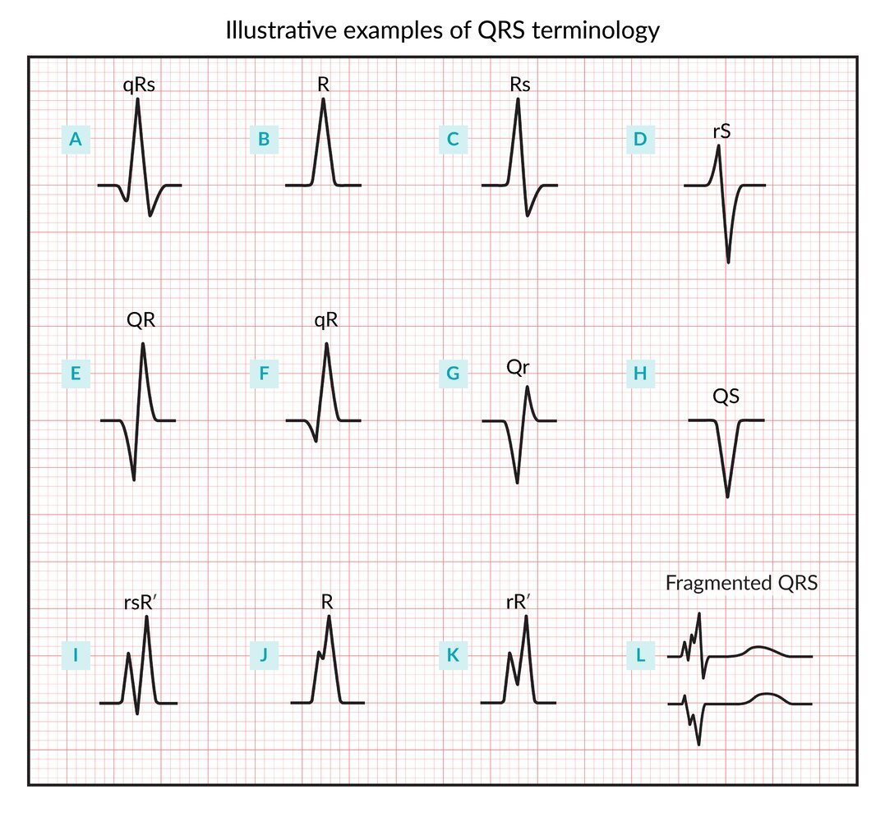
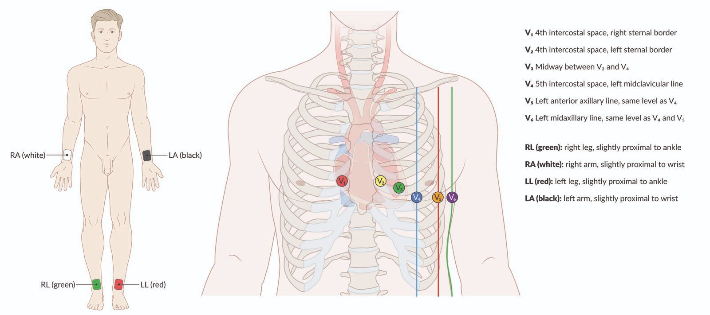
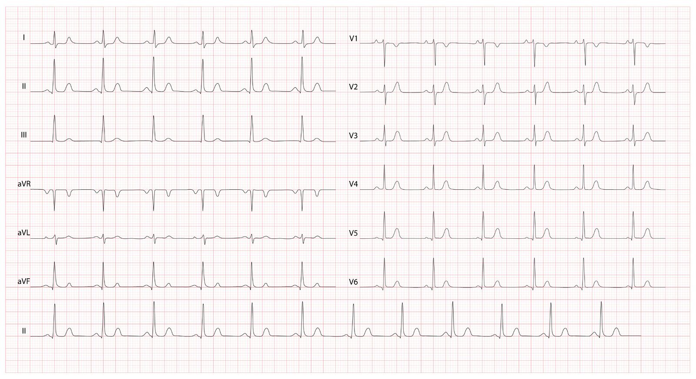

Paper · waves · leads — the vocabulary
Before You Read: Paper, Waves & Leads
The ECG draws the heart's electricity. Each wave is one step of conduction: SA node → atria (P wave) → pause in the AV node (PR segment) → His → bundle branches → Purkinje → ventricles (QRS) → ventricular repolarisation (T wave). The SA node sets the pace simply because it is the fastest pacemaker.



The paper (standard speed 25 mm/s)
PR interval
Normal ≤ 200 ms = 1 big box (crib sheet: 120–200 ms). Long = AV-node delay.
QRS duration
Normal < 120 ms = 3 small boxes. Wide = bundle branch block (or ventricular origin).
QT / QTc
QTc normal < 450 ms men / 460 ms women. Clinical danger > 500 ms.


Q = first negative deflection · R = first positive deflection · S = the negative deflection after the R. A second R is R′ ("R-prime"). Big letters = big waves, small letters = small waves. You won't always see a Q or an S.
Leads
12 views from 10 electrodes: 6 limb leads (I, II, III, aVR, aVL, aVF — the frontal plane) and 6 chest leads (V1–V6 — the horizontal plane). The printout shows ~2.5 s per lead, and the bottom strip is the full 10-second rhythm strip, almost always lead II.


Q: How long is one small box, one big box, and a standard 12-lead tracing?
Small box 0.04 s (40 ms); big box 0.2 s (200 ms); standard 12-lead 10 seconds (5 big boxes = 1 s).